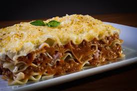

Home
lasagna

Descripcion
Ingredientes
- 1 cucharada de aceite (14 ml)
- 1 libra de carne molida magra (500 g)
- 1 sobre de BASE PARA SALSA BOLOÑESA MAGGI®
- 1 1/2 tazas de agua
- 1 pechuga de pollo sin piel cocinada y desmechada (453 g)
- 1 sobre de BASE PARA SALSA BECHAMEL MAGGI®
- 1 taza de agua fría (240 ml)
- 1 taza de leche (240 ml)
- 1 caja de pasta para lasaña (500 g)
- 8 tajadas de queso mozzarella (128 g)
- 8 cucharadas de queso parmesano (40 g)
Steps
- En una sartén mediana calienta el aceite a fuego medio por 30 segundos, agrega la carne y cocina por 5 minutos. Aparte disuelve el contenido del sobre de BASE PARA SALSA BOLOÑESA MAGGI® , en el agua sugerida y añade a la carne, cocina por 5 minutos mas o hasta que este bien cocinada y la salsa espesa
- En una olla pequeña añade el agua, la leche y disuelve el contenido de BASE SALSA BECHAMEL MAGGI®, lleva a fuego medio por 5 minutos o hasta que la salsa hierva y espese; por último añade el pollo desmechado deja al fuego por 1 minuto.
- Precalienta el horno 10 minutos antes de la preparación.
- En una refractaria mediana pon una cama de pasta para lasaña, encima distribuye la salsa de carne a la boloñesa, pon otra cama de pasta, encima la salsa de pollo, termina con las laminas de queso y por ultimo espolvorea el queso parmesano.
- Lleva la refractaria al horno y hornea por 10 minutos o hasta que gratine.